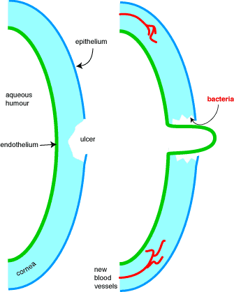

Foreign bodies often get into animals' eyes and cause some degree of inflammation. This is painful, so local anaesthetics are usually necessary to allow a proper examination (and possibly removal). Corneal damage can be detected by applying fluorescein drops to the eye; ulcers will stain green. Green appearing at the nose will also show that the nasolachrymal ducts are patent. Corneal infection is relatively common in all species and is treated with antibiotics. Mydriatics (drugs which dilate the pupil) are used to allow examination of the retina and to stop the iris forming adhesions after anterior chamber infection. Glaucoma is rarely diagnosed in dogs until it has progressed to the stage where drugs are not very effective, but a variety of drugs are used to reduce the formation of aqueous humour and increase drainage. Keratoconjunctivitis sicca usually responds to cyclosporin. Corticosteroids have to be used with great care in the eye because they stop corneal ulcers healing; these can become infected and perforate the anterior chamber. Steroids are usually only used in chronic inflammation to prevent the growth of blood vessels across the cornea.
The local anaesthetic most commonly used in other situations, lignocaine, is not usually used in the eye as it is an acid solution and stings on application (although it blocks senation after the initial stinging). Proxymetacaine is used for examination of the eye; it has a rapid onset and a short duration of action (15mins). Amethocaine (tetracaine USAN) has a longer duration of action.
Penetration of antibiotics into the eye after topical administration varies
but since many infections are superficial this does not usually matter. Systemic
therapy is not usually used (but note that some antibiotics are absorbed systemically
after application to the eye). Cloxacillin is commonly used
for pinkeye in cattle and sheep - duration of action up to 48 hours which is
usually enough to clear the problem. Gentamicin is sometimes
used for chronic ulcers, tobramycin is used where gentamicin
resistance is a problem. Framycetin has poor penetration but
is used for superficial infections while oxytetracycline is
sometimes used for chlamydial infection in cats.
Chloramphenicol penetrates the eye best but is no longer used
much in NZ (illegal in food animals). Florfenicol solution
can be used instead.
This is a condition where tear secretion is reduced - usually autoimmune and often caused by sulphonamides. The cornea dries out and usually gets badly damaged. There are two main treatments: immunosupressants and artificial tears to provide lubrication, although surgery (transplantation of the parotid duct) is popular in some places. Cyclosporin eye drops are the usual immunosuppressive treatment. Tear production usually returns in 1 - 8 weeks after immunosupression with cyclosporin. Hypromellose eye drops are the most commonly used artificial tears - they are not very practical as they have to be applied every 1 - 2 hours.
Corticosteroids (usually hydrocortisone) are normally only used to stop blood vessel growth, pigment deposition and scarring in the cornea. They are contra-indicated in corneal ulceration as they can slow healing of the ulcer and may make the ulcer deeper. If the ulcer penetrates the full thickness of the cornea, the anterior chamber will burst resulting in blindness. Topical application gives higher concentrations at the cornea than systemic administration.

Corneal ulceration - if the ulcer penetrates the full thickness of the cornea, the vulnerable endothelium will "cone" out. If this ruptures, the lens and iris are usually displaced into the hole and the animal is unlikely to see out of that eye again.
NSAIDs are used to reduce the inflammation of surgery, particularly cataract removal. Sometimes used as anti-inflammatories in corneal ulceration. Diclofenac and flurbiprofen have been the traditional drugs.